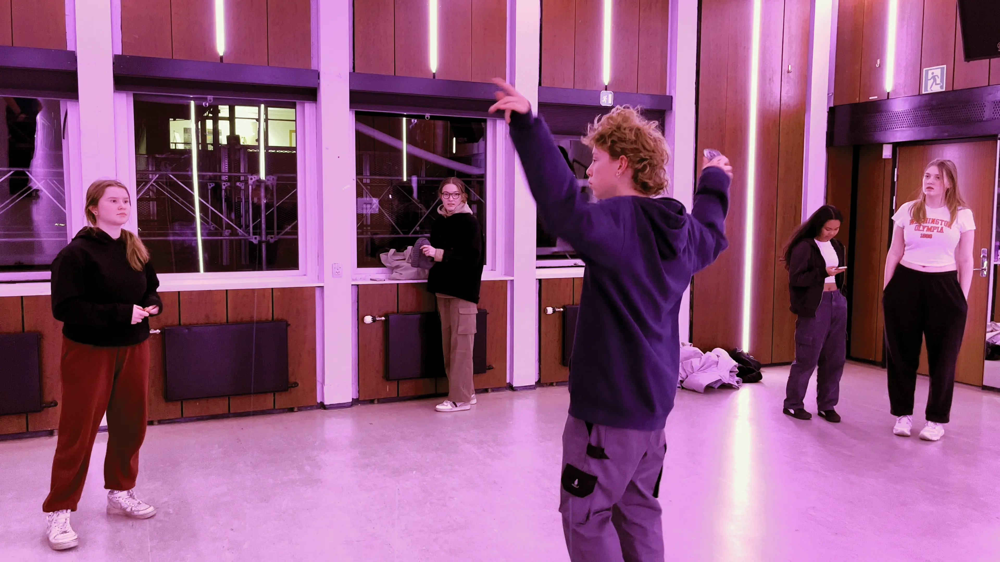
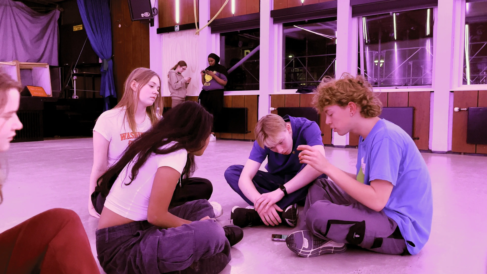
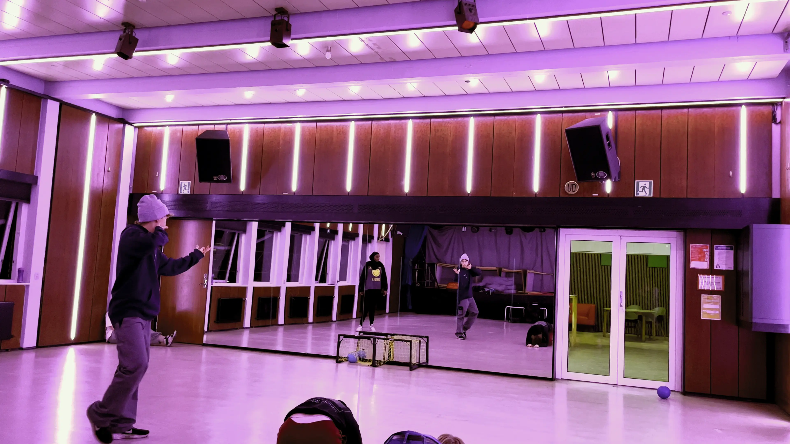
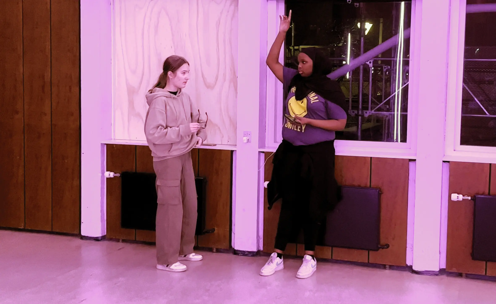
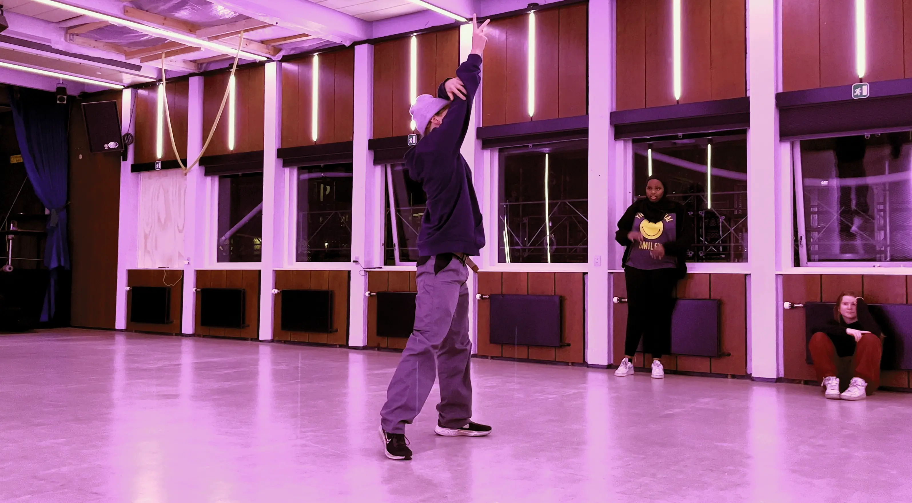
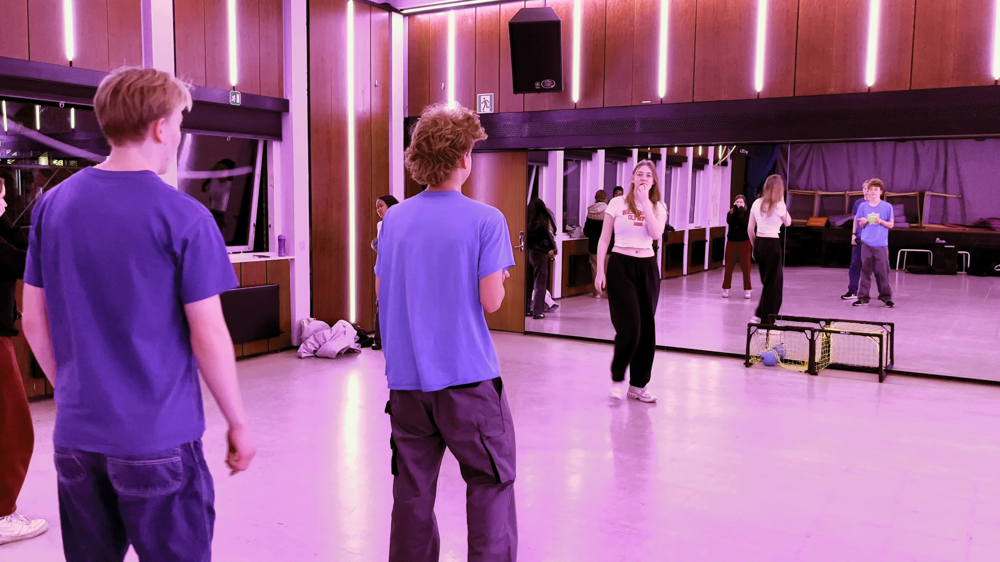
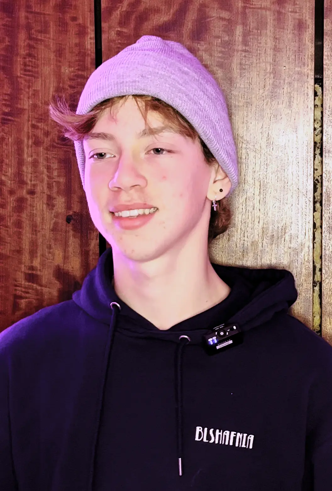

Passion for Dans
I denne video vil du møde Nikolaj, en 15-årig dreng med passion for dans. Han vil fortælle om hvorfor han begyndte at danse, hvad det er ved dans, der tiltrækker ham, og glæden han får ved at dele sin passion.
"Jeg føler at du kommer væk fra virkeligheden, så alle de bekymringer du har derhjemme bare forsvinder fordi at du kun fokuserer på dine moves."
Glæden i Kroppen






Mød Nikolaj

Nikolaj på 15 år begyndte at danse, da han for første gang prøvede spillet Just Dance i skolen. Lige siden har han været vild med at bevæge sin krop til rytmiske beats, og er især glad for breakdance, hiphop, og kpop.